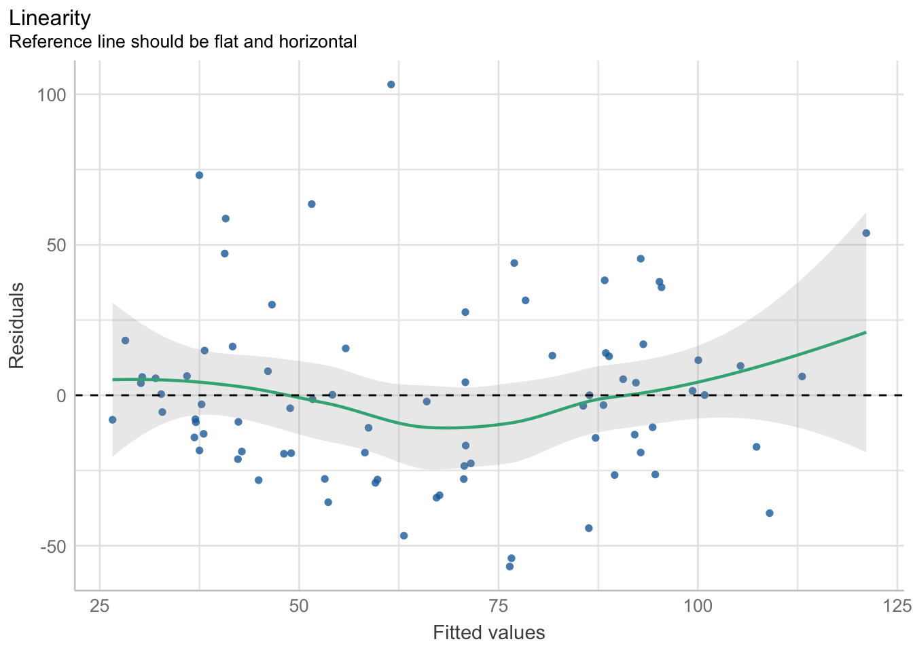
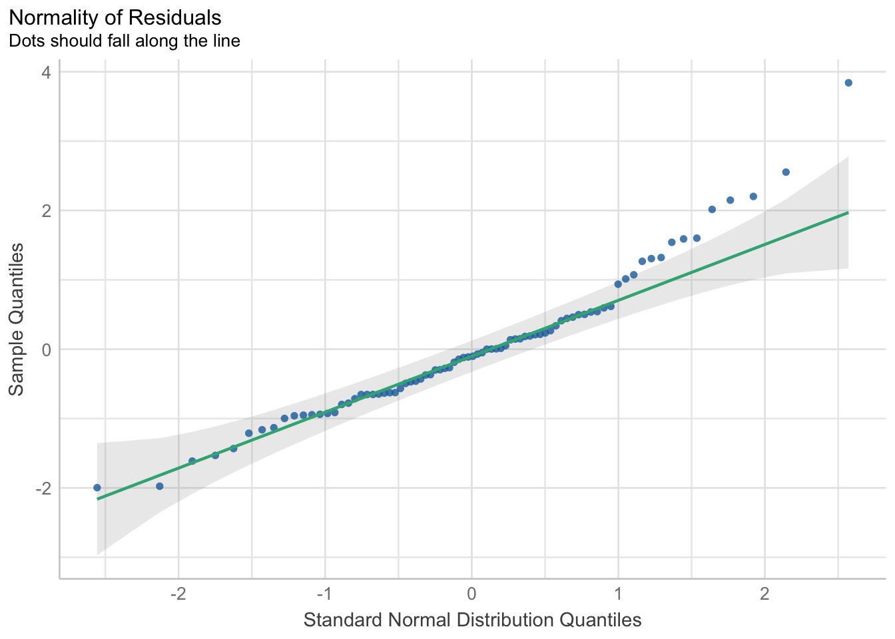
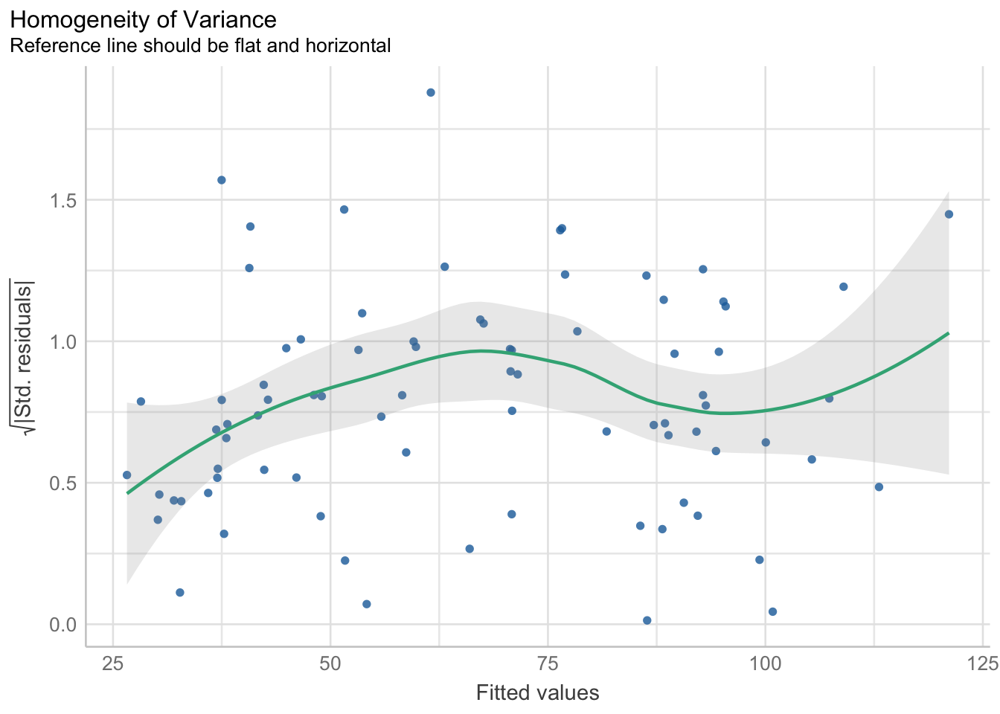
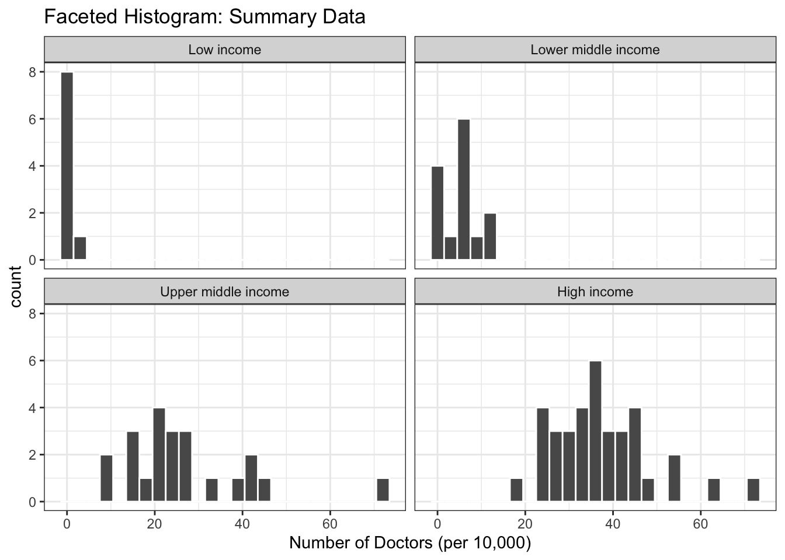
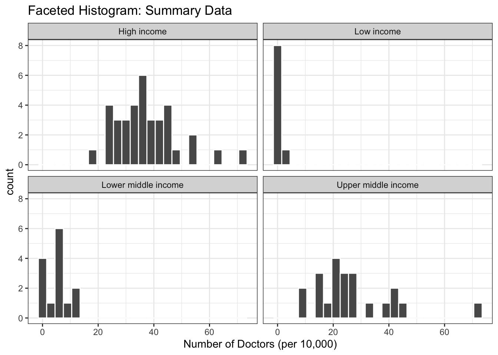
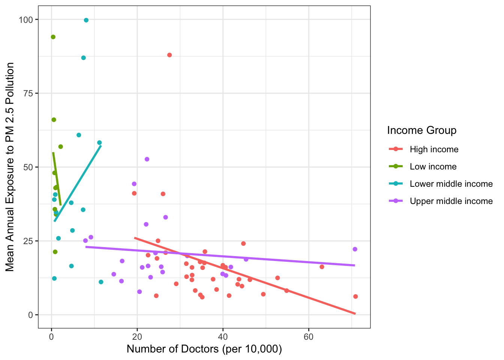

Final Draft
Analysis of Healthcare and Income Status of a Country as factors of mortality rate attributed to air pollution
Charavee Basnet Chettri, Claire Kelly, Abby Paharsingh
Introduction
Since the Industrial Revolution of the 18th and 19th century, our planet has been faced with the existential challenge of man-made air pollution. Although humans are painfully aware of the effects of air pollution on climate change and health, the benefits that have come from industrialization have thus far seemed too good to pass up. Industrialization brought with it the rise of the middle class, specialized jobs in industry, convenience, traveling possibilities, better healthcare and so much more. Therefore, we are faced with a dilemma, although a debate can be had about whether industrialization was necessary to procure these benefits, a more quantifiable question is whether there are areas in which the benefits of industrialization have served to counteract the harms. One such area is the physical health of humans.
There are many diseases attributed to living in areas with high amounts of air pollution, such as Chronic obstructive pulmonary disease (COPD), Lung cancer, Asthma, respiratory infections, to name a few. The goal of this paper is to investigate whether the increase in medical care that resulted from higher industrialization has managed to curb the deaths due to respiratory diseases caused by air pollution.
Our research question is, ‘What are the effects of the number of doctors and the income status of a country on its mortality rate attributed to air pollution?’. When looking for data, we chose to look at the income level of the country as a representation of the level of development of a country. In our currently capitalistic society, development is directly related to industrialization and more specifically the stage of industrialization a country is in. We also look at the number of doctors in a country as a representation of its level of medical care. Finally, we used data on both the rate of air pollution and the mortality rate caused by air pollution to evaluate how mortality rate changes with the level of air pollution. Our hypothesis claims that a country’s average mortality rate attributed to pollution does not depend on its income status or the number of doctors per 100,000. If we fail to reject this hypothesis, that would indicate that medical care and higher standard of living do not counteract the effects of air pollution on mortality rate.
Methods
Data
The data for this project was pulled from a number of sources and joined by their corresponding country codes. The data for Mortality rate attributed to household and ambient air pollution (per 100 000 population) sampled the general population of all UN-recognized nation-states. This data was collected by multiple organizations: (1) WHO Global Health Estimates whose data uses multiple consolidated sources, including national vital registration data, latest estimates from WHO technical programmes, United Nations partners and inter-agency groups, as well as the Global Burden of Disease and other scientific studies.\(^1\) (2) UN World Population Prospects, of which the latest assessment considers the results of 1,758 national population censuses conducted between 1950 and 2022, as well as information from vital registration systems and from 2,890 nationally representative sample surveys.\(^2\)
The data for Medical doctors (per 10 000 population) sampled the population of Medical doctors in UN-recognized nation-states. This sample includes generalists, specialist medical practitioners, and medical doctors not further defined, in a given national and/or subnational area. The sample was collected with help from the NHWA data platform developed to facilitate reporting in response to World Health Assembly 69.19.\(^3\) In addition to the reporting, the platform also serves as an analytical tool at the national/regional and global levels. Complementing the national reporting through the platform, additional sources such as the National Census, Labour Force Surveys and administrative national and regional sources are also employed. Additionally, the denominator data for workforce density (i.e. national population estimates) are also obtained from the United Nations Population Division’s World Population Prospects database.
Estimates of annual concentrations of PM 2.5 air pollution are generated by combining data from atmospheric chemistry transport models, satellite observations of aerosols in the atmosphere, and ground-level monitoring of particulates. Exposure to concentrations of PM2.5 in both urban and rural areas is weighted by the population of respective UN-recognized nation-states and is aggregated at the national level. The data were provided by Institute for Health Metrics and Evaluation, University of Washington, Seattle and produced by the Global Burden of Disease study.\(^4\) Lastly, the data for the designation of income status to country sampled the population for all 189 World Bank member countries, plus 28 other economies with populations of more than 30,000. Estimates of GNI (Gross National Income) are obtained from economists in World Bank country units who rely primarily on official data published by the countries; the size of the population is estimated by World Bank demographers from a variety of sources, including the UN’s biennial World Population Prospects.\(^5\)
Variables
We chose the average mortality rate attributed to air pollution, calculated per 100,000 of the population, as our outcome variable. This follows, since we are looking at how many people died, as an indication of failure to alleviate the symptoms of disease caused by air pollution. We used three explanatory variables to understand the outcome variable. Firstly, two numerical variables: the number of doctors per 10 000 population, mean annual exposure to PM2.5 air pollution, measured in micrograms per cubic meter, as well as, designation of income status to country, which is a categorical variable classifying countries as low, lower-middle, upper-middle, and high income based on what range of gross national income (GNI) per capita in U.S. dollars they fall within. These ranges are decided upon by the world bank based on numerous factors, such as global inflation, and they are adjusted on the first of July of each year.\(^6\)
The individual data sets didn’t have significant amounts of data missing, however in each data set there were a few different countries without information. For example, we had mortality data for Cuba, but not Income Data. Which means that although there was some data for these countries, we couldn’t use them for the comparison. Across the 183 countries that the UN had mortality data (the data set with the highest number of countries) for, only 81 of them had information across all four datasets. This constitutes about 44% of the countries.
Analysis
For our analysis, we chose a parallel slopes model with one outcome variable (average mortality rate attributed to air pollution) and three explanatory variables (mean annual exposure to PM 2.5 pollution and number of doctors per 100,000 and income group) i.e. AvgMortalityRate ~ PollutionExposure + IncomeGroup + DoctorRate. Our model selection process began with the evaluation of the simplest model like the linear regression between average mortality rate and pollution exposure. This selection process then progressed with adding complexity with a new explanatory variable like income group and consequently number of doctors per 100,000 at each step. For each new model, we analyzed its regression statistics like the coefficient’s statistical significance, the compliance with the LINE conditions, and the adjusted R^2. When these observations were favorable, we conducted a nested F-test between the latest additive model (reduced model) and its interaction (full model) to check if the increased predictive accuracy in the interaction model was statistically significant to include. In this entire study, interactions were not worth it for any of the models. Finally, we conducted another nested F-test between the latest model with a new variable (full model) and the last model (reduced model) to determine whether the new variable improved the effectiveness of a model. It is important to note that we included pollution exposure in our final model to control for it so that we account for this variable’s potentially confounding nature. Through trial and error, we chose the optimal fitting model: a parallel slopes model with pollution exposure, income group and number of doctors predicting the average mortality rate of a country.
Results
Our model (AvgMortalityRate ~ PollutionExposure + IncomeGroup + DoctorRate) performs a statistical analysis on the 81 valid observations out of 217 from the dataset. In this sample, the income groups are not evenly distributed, because it comprises 44.4% of high income countries, 27.1% of upper middle income countries, 17.2% of lower middle income countries, and only 11.1% of low income countries. According to figure ___, the median mean annual exposure to PM 2.5 pollution is the highest in low income countries and the lowest in high income countries relative to each level. In contrast, the median number of doctors per 10,000 is the lowest for low income countries, and highest for high income countries. Our model sought to understand the effect of these variables on the average mortality rate of a country.
The model shows that the predicted average mortality rates of a low income country, lower middle income country, and upper middle income country are, respectively, 83.29, 79.19 and 40.37 per 100,000 population higher than that of a high income country. Furthermore, for every one microgram per cubic meter increase in mean annual exposure to PM 2.5 pollution, the predicted average mortality rate of a country of any income group (given the parallel slopes model) increases by 0.26 person per 100,000, allowing for simultaneous changes in the number of doctors per 10,000.
To get a clearer picture of differences in the predicted average mortality rate between each income group instead of in relation to high income countries, we performed two sets of contrasts: one that fixed the number of doctors per 10,000, and another that fixed the pollution exposure (Figure ___). For the contrasts that held the number of doctors per 10,000 constant, low income countries have higher exposure to pollution than upper and lower middle income countries (p < 0.05), and lower middle income countries have more pollution exposure than upper middle income countries. However, these results were not statistically significant (p> 0.05). In the case of contrasts that fixed the pollution exposure, the number of doctors per 10,000 were greater in low income countries than upper and lower middle income countries, and in lower middle income countries compared to upper middle income countries. Again, these results were also not statistically significant (p>0.05).
Based on individual t-tests for our model, the aforementioned coefficients for the two explanatory variables: income group and number of doctors per 10,000, are statistically significant (p < 0.05). However, the coefficient of the third explanatory variable: pollution exposure, became statistically insignificant when each covariate was added in our additive model. We conducted a VIF test to potentially show that the adding the two other variables could have increased the uncertainty in the pollution exposure variable to render this coefficient statistically insignificant. However, this test does not display multicollinearity, since the VIF for all three explanatory variables are less than 5 (Figure ___).
In our study, we are testing whether a country’s average mortality rate also depends on its income status and/or the number of doctors per 10,000 beyond the exposure to PM 2.5 pollution. The results of this model allow us to reject the null hypothesis. In other words, these two explanatory variables explain the variability in the average mortality rate of a country beyond the capacity of pollution exposure. In addition to results yielded from the t-tests mentioned above, the nested F-test between our chosen model (full model) and other (reduced) model yielded statistically significant F-statistics (p < 0.05) to permit the rejection of the null hypothesis. In other words, the inclusion of the number of doctors per 10,000 and income group improves the effectiveness of the model, and the slope of average mortality rate is dependent on these variables. Furthemore, the adjusted R^2 improves significantly in our chosen model (37.67%) compared to the simple regression between average mortality rate and pollution exposure (11.7%), or the additive multiple regression among average mortality rate, pollution exposure, and income group (30.26%). These results mean that our chosen model explains more variability in the outcome than the other models.
Discussion
Our original research question focused on how a country’s industrialization, operationalized as pollution levels, income status, and availability of doctors, predicted its mortality rate due to pollution. We hypothesized that while countries with higher pollution levels would have higher death rates due to pollution, that their income and availability of doctors would mitigate this effect.
While our analysis showed that our explanatory variables are mostly statistically significant in predicting mortality rates due to pollution, the nature of the effects was contrary to our original hypothesis. Overall, our chosen additive model was generally supported by model comparison tests like the nested F-test and measures of fit, such as omnibus F tests and R2 values, however the R2 value was moderate and thus not strongly convincing of the model’s explanatory power. The simple effects between variables replicated prior research findings, both in statistical significance and direction. Prominently, our analysis confirmed that income status of a country is a significant predictor of mortality rate due to pollution, which we confirmed with contrasts (all significant apart from the difference between low income and low middle income). However, once creating more complex multiple regression models, air pollution exposure lost its significance, and the relationship between rate of doctors and mortality rate became positive but remained statistically significant, suggesting that pollution was no longer a significant predictor and that higher rates of doctors predicted higher mortality rates. We rationalize this change in significance and directionality in a few ways. Because mortality rate due to pollution is calculated using annual air pollution levels, we continue to assert that the correlation between the two variables is important despite its loss of statistical significance. Although analysis revealed that multicollinearity was not evident in our model, which could have explained this change, we remain confident in the underlying relationship between these two variables. As for the change in directionality between the rate of doctors and environmental mortality rates, perhaps the relationship had the reverse causality than we hypothesized. In other words, it is possible that a higher environmental mortality rate leads to the presence of more doctors, rather than more doctors increasing environmental mortality rates.
Limitations and Future Directions
Model and data limitations may account for our results not supporting our hypothesis, thus improvements on our methods could aid in creating a more accurate model.
Our model generally passed all regression assumptions, however, the discrepancies present are a limitation to the validity of our findings. Our model passed the linearity assumption, however there appears to be a slight non-linear pattern. While not significant enough to reject a linear model, future analysis may benefit from either polynomial or logarithmic transformations. The potential benefit of transformation is compounded by the slight right skew present in the normality of residuals plot. The equal variance assumption was met, and thus not an issue to our model. Lastly, our model appears to pass the independence assumption as each observation is a distinct county at one period of time, rather than repeated measurements over time. Overall, our model passed regression assumptions, however, exploring polynomial or logarithmic transformations could be beneficial in future studies.
There are also limitations with our data itself due both to how we operationalized the concept of industrialization, as well as reliability of the data collected. Industrialization is complex and difficult to reduce to readily accessible variables. Our project in part aimed to better understand the relationship between factors of industrialization. For example, we were curious about access to healthcare and its relationship with industrialization. We chose to look at the rate of doctors as we had access to this data for numerous countries, and it allowed us to adjust for population size. However, access to healthcare is not determined solely on the rate of doctors, therefore, our model does not capture the full complexity of the issue. Other metrics such as proximity to doctors, availability of specialists, and affordability of health care may capture the issue of accessibility more, and thus would provide a more reliable model. This issue of simplification of complex ideas is present in most of our variables. We used annual exposure to air pollution to determine the effects on individuals’ health, however, other forms of pollution also exist, including in water and soil. As the levels of other forms of pollution may vary from country to country, it is possible that only measuring air pollution creates an inaccurate representation of pollution’s health effects. Further research on the ideal way to operationalize complex ideas like industrialization and subsequent adjustments to the explanatory variables chosen may improve the fit of the model and potentially change the results to align with our original hypothesis.
It is also possible to consider that the data itself is not reliable. The global nature of these measures mean that data collection processes and the resources allocated to them are not consistent across all countries. For example, lower income countries may not have the same infrastructure to collect and report on specific data such as the rate of doctors, and thus our analysis is not using accurate data. In addition, the self-report nature of some of the variables introduced more uncertainty, as countries may be compelled to put forth favoring statistics. A further limitation is that data collection from different variables does not happen on the same time schedule. To have enough data to analyze, we were required to use data from 2019, rather than the most recent year. However, the most recently available pollution exposure data was from 2017, leading us to use data from two different years. We suspect that the inconsistency in year would not cause enough disruption to change the overall patterns in our data, however, it is also possible that it would make a noticeable difference in our results.
Based on the limitations of our data and the resulting model, we caution readers from generalizing from our findings. While the patterns may indeed accurately reflect the variables contributing to industrialization, it is also highly possible that with differently operationalized variables, more reliable data collection, and model transformations, that the results would be different. Instead, we frame this analysis as evidence that future study is needed to adequately comprehend the complexities of industrialization’s many factors.
References
Exposure to air pollution with fine particulate matter. (n.d.). Our World in Data. Retrieved December 18, 2022, from https://ourworldindata.org/grapher/PM25-air-pollution
Global Health Estimates. (n.d.). Retrieved December 18, 2022, from https://www.who.int/data/global-health-estimates
How does the World Bank classify countries? – World Bank Data Help Desk. (n.d.). Retrieved December 18, 2022, from https://datahelpdesk.worldbank.org/knowledgebase/articles/378834-how-does-the-world-bank-classify-countries
Medical doctors (per 10 000 population). (n.d.). Retrieved December 18, 2022, from https://www.who.int/data/gho/data/indicators/indicator-details/GHO/medical-doctors-(per-10-000-population)
New World Bank country classifications by income level: 2021-2022. (n.d.). Retrieved December 18, 2022, from https://blogs.worldbank.org/opendata/new-world-bank-country-classifications-income-level-2021-2022
World Population Prospects—Population Division—United Nations. (n.d.). Retrieved December 18, 2022, from https://population.un.org/wpp/
Data Appendix
All our statistics are significant at the 0.05 level.
LINE assumptions
Linearity Check
$NCV
Normality Check
$QQ
Variance Check
$HOMOGENEITY
Linearity The relationship between the outcome and predictors are not perfectly linear but not sufficiently non-linear to fail the linearity check.
Independence of observations Since our data describes individual countries at a singular point in time rather than one country over a period of time, there is very little likelihood that one observation would overlap with or influence another. Therefore, we have reason to believe that this condition is not violated.
Normality This condition is largely met, except for the slight right skew in the error distribution.
Homogeneity of Variance The variance of the outcome variable does not appear to drastically change as the explanatory variables change. In other words, the spread of the residuals appear relatively random and even. Therefore, this condition is not violated.
Regression table
Call:
lm(formula = AvgMortalityRate ~ PollutionExposure + IncomeGroup +
DoctorRate, data = data_final)
Residuals:
Min 1Q Median 3Q Max
-56.906 -19.071 -3.026 13.154 103.266
Coefficients:
Estimate Std. Error t value Pr(>|t|)
(Intercept) -1.4335 14.1052 -0.102 0.9193
PollutionExposure 0.2666 0.2027 1.316 0.1923
IncomeGroupLow income 83.2922 16.8980 4.929 4.81e-06 ***
IncomeGroupLower middle income 79.1908 14.4940 5.464 5.83e-07 ***
IncomeGroupUpper middle income 40.3716 8.8473 4.563 1.93e-05 ***
DoctorRate 1.0773 0.3269 3.296 0.0015 **
---
Signif. codes: 0 '***' 0.001 '**' 0.01 '*' 0.05 '.' 0.1 ' ' 1
Residual standard error: 30.15 on 75 degrees of freedom
Multiple R-squared: 0.4213, Adjusted R-squared: 0.3827
F-statistic: 10.92 on 5 and 75 DF, p-value: 6.483e-08Contrast 1: Fixing number of doctors per 10,000
| avg_pollExp | std_dev |
|---|---|
| 26.04489 | 20.75431 |
| contrast | PollutionExposure | estimate | SE | df | t.ratio | p.value |
|---|---|---|---|---|---|---|
| High income DoctorRate24.817037037037 - Low income DoctorRate24.817037037037 | 5.29 | -83.292241 | 16.898047 | 75 | -4.929105 | 0.0000282 |
| High income DoctorRate24.817037037037 - Lower middle income DoctorRate24.817037037037 | 5.29 | -79.190794 | 14.493970 | 75 | -5.463706 | 0.0000034 |
| High income DoctorRate24.817037037037 - Upper middle income DoctorRate24.817037037037 | 5.29 | -40.371625 | 8.847303 | 75 | -4.563156 | 0.0001120 |
| Low income DoctorRate24.817037037037 - Lower middle income DoctorRate24.817037037037 | 5.29 | 4.101446 | 13.007128 | 75 | 0.315323 | 0.9890575 |
| Low income DoctorRate24.817037037037 - Upper middle income DoctorRate24.817037037037 | 5.29 | 42.920615 | 15.187860 | 75 | 2.825982 | 0.0301093 |
| Lower middle income DoctorRate24.817037037037 - Upper middle income DoctorRate24.817037037037 | 5.29 | 38.819169 | 12.843748 | 75 | 3.022417 | 0.0176614 |
| High income DoctorRate24.817037037037 - Low income DoctorRate24.817037037037 | 26.04 | -83.292241 | 16.898047 | 75 | -4.929105 | 0.0000282 |
| High income DoctorRate24.817037037037 - Lower middle income DoctorRate24.817037037037 | 26.04 | -79.190794 | 14.493970 | 75 | -5.463706 | 0.0000034 |
| High income DoctorRate24.817037037037 - Upper middle income DoctorRate24.817037037037 | 26.04 | -40.371625 | 8.847303 | 75 | -4.563156 | 0.0001120 |
| Low income DoctorRate24.817037037037 - Lower middle income DoctorRate24.817037037037 | 26.04 | 4.101446 | 13.007128 | 75 | 0.315323 | 0.9890575 |
| Low income DoctorRate24.817037037037 - Upper middle income DoctorRate24.817037037037 | 26.04 | 42.920615 | 15.187860 | 75 | 2.825982 | 0.0301093 |
| Lower middle income DoctorRate24.817037037037 - Upper middle income DoctorRate24.817037037037 | 26.04 | 38.819169 | 12.843748 | 75 | 3.022417 | 0.0176614 |
| High income DoctorRate24.817037037037 - Low income DoctorRate24.817037037037 | 46.79 | -83.292241 | 16.898047 | 75 | -4.929105 | 0.0000282 |
| High income DoctorRate24.817037037037 - Lower middle income DoctorRate24.817037037037 | 46.79 | -79.190794 | 14.493970 | 75 | -5.463706 | 0.0000034 |
| High income DoctorRate24.817037037037 - Upper middle income DoctorRate24.817037037037 | 46.79 | -40.371625 | 8.847303 | 75 | -4.563156 | 0.0001120 |
| Low income DoctorRate24.817037037037 - Lower middle income DoctorRate24.817037037037 | 46.79 | 4.101446 | 13.007128 | 75 | 0.315323 | 0.9890575 |
| Low income DoctorRate24.817037037037 - Upper middle income DoctorRate24.817037037037 | 46.79 | 42.920615 | 15.187860 | 75 | 2.825982 | 0.0301093 |
| Lower middle income DoctorRate24.817037037037 - Upper middle income DoctorRate24.817037037037 | 46.79 | 38.819169 | 12.843748 | 75 | 3.022417 | 0.0176614 |
Contrast 2: Fixing exposure to pollution
| avg_pollExp | std_dev |
|---|---|
| 24.81704 | 17.67225 |
| contrast | DoctorRate | estimate | SE | df | t.ratio | p.value |
|---|---|---|---|---|---|---|
| PollutionExposure26.0448895324895 High income - PollutionExposure26.0448895324895 Low income | 7.15 | -83.292241 | 16.898047 | 75 | -4.929105 | 0.0000282 |
| PollutionExposure26.0448895324895 High income - PollutionExposure26.0448895324895 Lower middle income | 7.15 | -79.190794 | 14.493970 | 75 | -5.463706 | 0.0000034 |
| PollutionExposure26.0448895324895 High income - PollutionExposure26.0448895324895 Upper middle income | 7.15 | -40.371625 | 8.847303 | 75 | -4.563156 | 0.0001120 |
| PollutionExposure26.0448895324895 Low income - PollutionExposure26.0448895324895 Lower middle income | 7.15 | 4.101446 | 13.007128 | 75 | 0.315323 | 0.9890575 |
| PollutionExposure26.0448895324895 Low income - PollutionExposure26.0448895324895 Upper middle income | 7.15 | 42.920615 | 15.187860 | 75 | 2.825982 | 0.0301093 |
| PollutionExposure26.0448895324895 Lower middle income - PollutionExposure26.0448895324895 Upper middle income | 7.15 | 38.819169 | 12.843748 | 75 | 3.022417 | 0.0176614 |
| PollutionExposure26.0448895324895 High income - PollutionExposure26.0448895324895 Low income | 24.82 | -83.292241 | 16.898047 | 75 | -4.929105 | 0.0000282 |
| PollutionExposure26.0448895324895 High income - PollutionExposure26.0448895324895 Lower middle income | 24.82 | -79.190794 | 14.493970 | 75 | -5.463706 | 0.0000034 |
| PollutionExposure26.0448895324895 High income - PollutionExposure26.0448895324895 Upper middle income | 24.82 | -40.371625 | 8.847303 | 75 | -4.563156 | 0.0001120 |
| PollutionExposure26.0448895324895 Low income - PollutionExposure26.0448895324895 Lower middle income | 24.82 | 4.101446 | 13.007128 | 75 | 0.315323 | 0.9890575 |
| PollutionExposure26.0448895324895 Low income - PollutionExposure26.0448895324895 Upper middle income | 24.82 | 42.920615 | 15.187860 | 75 | 2.825982 | 0.0301093 |
| PollutionExposure26.0448895324895 Lower middle income - PollutionExposure26.0448895324895 Upper middle income | 24.82 | 38.819169 | 12.843748 | 75 | 3.022417 | 0.0176614 |
| PollutionExposure26.0448895324895 High income - PollutionExposure26.0448895324895 Low income | 42.49 | -83.292241 | 16.898047 | 75 | -4.929105 | 0.0000282 |
| PollutionExposure26.0448895324895 High income - PollutionExposure26.0448895324895 Lower middle income | 42.49 | -79.190794 | 14.493970 | 75 | -5.463706 | 0.0000034 |
| PollutionExposure26.0448895324895 High income - PollutionExposure26.0448895324895 Upper middle income | 42.49 | -40.371625 | 8.847303 | 75 | -4.563156 | 0.0001120 |
| PollutionExposure26.0448895324895 Low income - PollutionExposure26.0448895324895 Lower middle income | 42.49 | 4.101446 | 13.007128 | 75 | 0.315323 | 0.9890575 |
| PollutionExposure26.0448895324895 Low income - PollutionExposure26.0448895324895 Upper middle income | 42.49 | 42.920615 | 15.187860 | 75 | 2.825982 | 0.0301093 |
| PollutionExposure26.0448895324895 Lower middle income - PollutionExposure26.0448895324895 Upper middle income | 42.49 | 38.819169 | 12.843748 | 75 | 3.022417 | 0.0176614 |
Testing VIF
| GVIF | Df | GVIF^(1/(2*Df)) | |
|---|---|---|---|
| PollutionExposure | 1.557573 | 1 | 1.248028 |
| IncomeGroup | 3.172806 | 3 | 1.212199 |
| DoctorRate | 2.937287 | 1 | 1.713852 |
Nested F-tests
| Res.Df | RSS | Df | Sum of Sq | F | Pr(>F) |
|---|---|---|---|---|---|
| 79 | 102696.55 | NA | NA | NA | NA |
| 75 | 68159.51 | 4 | 34537.05 | 9.500796 | 2.9e-06 |
| Res.Df | RSS | Df | Sum of Sq | F | Pr(>F) |
|---|---|---|---|---|---|
| 78 | 101324.30 | NA | NA | NA | NA |
| 75 | 68159.51 | 3 | 33164.79 | 12.1644 | 1.4e-06 |
| Res.Df | RSS | Df | Sum of Sq | F | Pr(>F) |
|---|---|---|---|---|---|
| 76 | 78031.70 | NA | NA | NA | NA |
| 75 | 68159.51 | 1 | 9872.187 | 10.86296 | 0.0015003 |
| Res.Df | RSS | Df | Sum of Sq | F | Pr(>F) |
|---|---|---|---|---|---|
| 75 | 68159.51 | NA | NA | NA | NA |
| 65 | 56533.50 | 10 | 11626.01 | 1.336712 | 0.2303624 |
Informative and Exploratory Graphs


